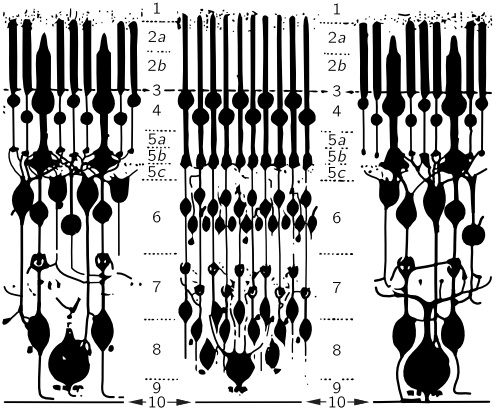
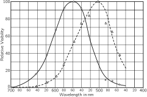

35. Color Vision
(There was no summary for this lecture.)
35–1 The human eye#
The phenomenon of colors depends partly on the physical world. We discuss the colors of soap films and so on as being produced by interference. But also, of course, it depends on the eye, or what happens behind the eye, in the brain. Physics characterizes the light that enters the eye, but after that, our sensations are the result of photochemical-neural processes and psychological responses.
There are many interesting phenomena associated with vision which involve a mixture of physical phenomena and physiological processes, and the full appreciation of natural phenomena, as we see them, must go beyond physics in the usual sense. We make no apologies for making these excursions into other fields, because the separation of fields, as we have emphasized, is merely a human convenience, and an unnatural thing. Nature is not interested in our separations, and many of the interesting phenomena bridge the gaps between fields.
In Chapter 3 we have already discussed the relation of physics to the other sciences in general terms, but now we are going to look in some detail at a specific field in which physics and other sciences are very, very closely interrelated. That area is vision. In particular, we shall discuss color vision. In the present chapter we shall discuss mainly the observable phenomena of human vision, and in the next chapter we shall consider the physiological aspects of vision, both in man and in other animals.
It all begins with the eye; so, in order to understand what phenomena we see, some knowledge of the eye is required. In the next chapter we shall discuss in some detail how the various parts of the eye work, and how they are interconnected with the nervous system. For the present, we shall describe only briefly how the eye functions (Fig. 35–1).
Light enters the eye through the cornea; we have already discussed how it is bent and is imaged on a layer called the retina in the back of the eye, so that different parts of the retina receive light from different parts of the visual field outside. The retina is not absolutely uniform: there is a place, a spot, in the center of our field of view which we use when we are trying to see things very carefully, and at which we have the greatest acuity of vision; it is called the fovea or macula. The side parts of the eye, as we can immediately appreciate from our experience in looking at things, are not as effective for seeing detail as is the center of the eye. There is also a spot in the retina where the nerves carrying all the information run out; that is a blind spot. There is no sensitive part of the retina here, and it is possible to demonstrate that if we close, say, the left eye and look straight at something, and then move a finger or another small object slowly out of the field of view it suddenly disappears somewhere. The only practical use of this fact that we know of is that some physiologist became quite a favorite in the court of a king of France by pointing this out to him; in the boring sessions that he had with his courtiers, the king could amuse himself by “cutting off their heads” by looking at one and watching another’s head disappear.

Figure 35–2 shows a magnified view of the inside of the retina in somewhat schematic form. In different parts of the retina there are different kinds of structures. The objects that occur more densely near the periphery of the retina are called rods. Closer to the fovea, we find, besides these rod cells, also cone cells. We shall describe the structure of these cells later. As we get close to the fovea, the number of cones increases, and in the fovea itself there are in fact nothing but cone cells, packed very tightly, so tightly that the cone cells are much finer, or narrower here than anywhere else. So we must appreciate that we see with the cones right in the middle of the field of view, but as we go to the periphery we have the other cells, the rods. Now the interesting thing is that in the retina each of the cells which is sensitive to light is not connected by a fiber directly to the optic nerve, but is connected to many other cells, which are themselves connected to each other. There are several kinds of cells: there are cells that carry the information toward the optic nerve, but there are others that are mainly interconnected “horizontally.” There are essentially four kinds of cells, but we shall not go into these details now. The main thing we emphasize is that the light signal is already being “thought about.” That is to say, the information from the various cells does not immediately go to the brain, spot for spot, but in the retina a certain amount of the information has already been digested, by a combining of the information from several visual receptors. It is important to understand that some brain-function phenomena occur in the eye itself.
35–2 Color depends on intensity#
One of the most striking phenomena of vision is the dark adaptation of the eye. If we go into the dark from a brightly lighted room, we cannot see very well for a while, but gradually things become more and more apparent, and eventually we can see something where we could see nothing before. If the intensity of the light is very low, the things that we see have no color. It is known that this dark-adapted vision is almost entirely due to the rods, while the vision in bright light is due to the cones. As a result, there are a number of phenomena that we can easily appreciate because of this transfer of function from the cones and rods together, to just the rods.
There are many situations in which, if the light intensity were stronger, we could see color, and we would find these things quite beautiful. One example is that through a telescope we nearly always see “black and white” images of faint nebulae, but W. C. Miller of the Mt. Wilson and Palomar Observatories had the patience to make color pictures of some of these objects. Nobody has ever really seen these colors with the eye, but they are not artificial colors, it is merely that the light intensity is not strong enough for the cones in our eye to see them. Among the more spectacular such objects are the ring nebula and the Crab nebula. The former shows a beautiful blue inner part, with a bright red outer halo, and the latter shows a general bluish haze permeated by bright red-orange filaments.
In the bright light, apparently, the rods are at very low sensitivity but, in the dark, as time goes on they pick up their ability to see light. The variations in light intensity for which one can adapt is over a million to one. Nature does not do all this with just one kind of cell, but she passes her job from bright-light-seeing cells, the color-seeing cells, the cones, to low-intensity, dark-adapted cells, the rods. Among the interesting consequences of this shift is, first, that there is no color, and second, that there is a difference in the relative brightness of differently colored objects. It turns out that the rods see better toward the blue than the cones do, and the cones can see, for example, deep red light, while the rods find that absolutely impossible to see. So red light is black so far as the rods are concerned. Thus two pieces of colored paper, say blue and red, in which the red might be even brighter than the blue in good light, will, in the dark, appear completely reversed. It is a very striking effect. If we are in the dark and can find a magazine or something that has colors and, before we know for sure what the colors are, we judge the lighter and darker areas, and if we then carry the magazine into the light, we may see this very remarkable shift between which was the brightest color and which was not. The phenomenon is called the Purkinje effect.

In Fig. 35–3, the dashed curve represents the sensitivity of the eye in the dark, i.e., using the rods, while the solid curve represents it in the light. We see that the peak sensitivity of the rods is in the green region and that of the cones is more in the yellow region. If there is a red-colored page (red is about 650 m \mu) we can see it if it is brightly lighted, but in the dark it is almost invisible.
Another effect of the fact that rods take over in the dark, and that there are no rods in the fovea, is that when we look straight at something in the dark, our vision is not quite as acute as when we look to one side. A faint star or nebula can sometimes be seen better by looking a little to one side than directly at it, because we do not have sensitive rods in the middle of the fovea.
Another interesting effect of the fact that the number of cones decreases as we go farther to the side of the field of view is that even in a bright light color disappears as the object goes far to one side. The way to test that is to look in some particular fixed direction, let a friend walk in from one side with colored cards, and try to decide what color they are before they are right in front of you. One finds that he can see that the cards are there long before he can determine the color. When doing this, it is advisable to come in from the side opposite the blind spot, because it is otherwise rather confusing to almost see the color, then not see anything, then to see the color again.
Another interesting phenomenon is that the periphery of the retina is very sensitive to motion. Although we cannot see very well from the corner of our eye, if a little bug moves and we do not expect anything to be moving over there, we are immediately sensitive to it. We are all “wired up” to look for something jiggling to the side of the field.
35–3 Measuring the color sensation#
Now we go to the cone vision, to the brighter vision, and we come to the question which is most characteristic of cone vision, and that is color. As we know, white light can be split by a prism into a whole spectrum of wavelengths which appear to us to have different colors; that is what colors are, of course: appearances. Any source of light can be analyzed by a grating or a prism, and one can determine the spectral distribution, i.e., the “amount” of each wavelength. A certain light may have a lot of blue, considerable red, very little yellow, and so on. That is all very precise in the sense of physics, but the question is, what color will it appear to be? It is evident that the different colors depend somehow upon the spectral distribution of the light, but the problem is to find what characteristics of the spectral distribution produce the various sensations. For example, what do we have to do to get a green color? We all know that we can simply take a piece of the spectrum which is green. But is that the only way to get green, or orange, or any other color?
Is there more than one spectral distribution which produces the same apparent visual effect? The answer is, definitely yes. There is a very limited number of visual effects, in fact just a three-dimensional manifold of them, as we shall shortly see, but there is an infinite number of different curves that we can draw for the light that comes from different sources. Now the question we have to discuss is, under what conditions do different distributions of light appear as exactly the same color to the eye?
The most powerful psycho-physical technique in color judgment is to use the eye as a null instrument. That is, we do not try to define what constitutes a green sensation, or to measure in what circumstances we get a green sensation, because it turns out that this is extremely complicated. Instead, we study the conditions under which two stimuli are indistinguishable. Then we do not have to decide whether two people see the same sensation in different circumstances, but only whether, if for one person two sensations are the same, they are also the same for another. We do not have to decide whether, when one sees something green, what it feels like inside is the same as what it feels like inside someone else when he sees something green; we do not know anything about that.
To illustrate the possibilities, we may use a series of four projector lamps which have filters on them, and whose brightnesses are continuously adjustable over a wide range: one has a red filter and makes a spot of red light on the screen, the next one has a green filter and makes a green spot, the third one has a blue filter, and the fourth one is a white circle with a black spot in the middle of it. Now if we turn on some red light, and next to it put some green, we see that in the area of overlap it produces a sensation which is not what we call reddish green, but a new color, yellow in this particular case. By changing the proportions of the red and the green, we can go through various shades of orange and so forth. If we have set it for a certain yellow, we can also obtain that same yellow, not by mixing these two colors but by mixing some other ones, perhaps a yellow filter with white light, or something like that, to get the same sensation. In other words, it is possible to make various colors in more than one way by mixing the lights from various filters.
What we have just discovered may be expressed analytically as follows. A particular yellow, for example, can be represented by a certain symbol Y, which is the “sum” of certain amounts of red-filtered light ( R) and green-filtered light ( G). By using two numbers, say r and g, to describe how bright the R and G are, we can write a formula for this yellow:
The question is, can we make all the different colors by adding together two or three lights of different, fixed colors? Let us see what can be done in that connection. We certainly cannot get all the different colors by mixing only red and green, because, for instance, blue never appears in such a mixture. However, by putting in some blue the central region, where all three spots overlap, may be made to appear to be a fairly nice white. By mixing the various colors and looking at this central region, we find that we can get a considerable range of colors in that region by changing the proportions, and so it is not impossible that all the colors can be made by mixing these three colored lights. We shall discuss to what extent this is true; it is in fact essentially correct, and we shall shortly see how to define the proposition better.
In order to illustrate our point, we move the spots on the screen so that they all fall on top of each other, and then we try to match a particular color which appears in the annular ring made by the fourth lamp. What we once thought was “white” coming from the fourth lamp now appears yellowish. We may try to match that by adjusting the red and green and blue as best we can by a kind of trial and error, and we find that we can approach rather closely this particular shade of “cream” color. So it is not hard to believe that we can make all colors. We shall try to make yellow in a moment, but before we do that, there is one color that might be very hard to make. People who give lectures on color make all the “bright” colors, but they never make brown, and it is hard to recall ever having seen brown light. As a matter of fact, this color is never used for any stage effect, one never sees a spotlight with brown light; so we think it might be impossible to make brown. In order to find out whether it is possible to make brown, we point out that brown light is merely something that we are not used to seeing without its background. As a matter of fact, we can make it by mixing some red and yellow. To prove that we are looking at brown light, we merely increase the brightness of the annular background against which we see the very same light, and we see that that is, in fact, what we call brown! Brown is always a dark color next to a lighter background. We can easily change the character of the brown. For example, if we take some green out we get a reddish brown, apparently a chocolaty reddish brown, and if we put more green into it, in proportion, we get that horrible color which all the uniforms of the Army are made of, but the light from that color is not so horrible by itself; it is of yellowish green, but seen against a light background.
Now we put a yellow filter in front of the fourth light and try to match that. (The intensity must of course be within the range of the various lamps; we cannot match something which is too bright, because we do not have enough power in the lamp.) But we can match the yellow; we use a green and red mixture, and put in a touch of blue to make it even more perfect. Perhaps we are ready to believe that, under good conditions, we can make a perfect match of any given color.
Now let us discuss the laws of color mixture. In the first place, we found that different spectral distributions can produce the same color; next, we saw that “any” color can be made by adding together three special colors, red, blue, and green. The most interesting feature of color mixing is this: if we have a certain light, which we may call X, and if it appears indistinguishable from Y, to the eye (it may be a different spectral distribution, but it appears indistinguishable), we call these colors “equal,” in the sense that the eye sees them as equal, and we write
Here is one of the great laws of color: if two spectral distributions are indistinguishable, and we add to each one a certain light, say Z (if we write X + Z, this means that we shine both lights on the same patch), and then we take Y and add the same amount of the same other light, Z, the new mixtures are also indistinguishable:
We have just matched our yellow; if we now shine pink light on the whole thing, it will still match. So adding any other light to the matched lights leaves a match. In other words, we can summarize all these color phenomena by saying that once we have a match between two colored lights, seen next to each other in the same circumstances, then this match will remain, and one light can be substituted for the other light in any other color mixing situation. In fact, it turns out, and it is very important and interesting, that this matching of the color of lights is not dependent upon the characteristics of the eye at the moment of observation: we know that if we look for a long time at a bright red surface, or a bright red light, and then look at a white paper, it looks greenish, and other colors are also distorted by our having looked so long at the bright red. If we now have a match between, say, two yellows, and we look at them and make them match, then we look at a bright red surface for a long time, and then turn back to the yellow, it may not look yellow any more; I do not know what color it will look, but it will not look yellow. Nevertheless the yellows will still look matched, and so, as the eye adapts to various levels of intensity, the color match still works, with the obvious exception of when we go into the region where the intensity of the light gets so low that we have shifted from cones to rods; then the color match is no longer a color match, because we are using a different system.
The second principle of color mixing of lights is this: any color at all can be made from three different colors, in our case, red, green, and blue lights. By suitably mixing the three together we can make anything at all, as we demonstrated with our two examples. Further, these laws are very interesting mathematically. For those who are interested in the mathematics of the thing, it turns out as follows. Suppose that we take our three colors, which were red, green, and blue, but label them A, B, and C, and call them our primary colors. Then any color could be made by certain amounts of these three: say an amount a of color A, an amount b of color B, and an amount c of color C makes X:
Now suppose another color Y is made from the same three colors:
Then it turns out that the mixture of the two lights (it is one of the consequences of the laws that we have already mentioned) is obtained by taking the sum of the components of X and Y:
It is just like the mathematics of the addition of vectors, where (a,b,c) are the components of one vector, and (a',b',c') are those of another vector, and the new light Z is then the “sum” of the vectors. This subject has always appealed to physicists and mathematicians. In fact, Schrödinger wrote a wonderful paper on color vision in which he developed this theory of vector analysis as applied to the mixing of colors. 1
Now a question is, what are the correct primary colors to use? There is no such thing as “the” correct primary colors for the mixing of lights. There may be, for practical purposes, three paints that are more useful than others for getting a greater variety of mixed pigments, but we are not discussing that matter now. Any three differently colored lights whatsoever 2 can always be mixed in the correct proportion to produce any color whatsoever. Can we demonstrate this fantastic fact? Instead of using red, green, and blue, let us use red, blue, and yellow in our projector. Can we use red, blue, and yellow to make, say, green?
By mixing these three colors in various proportions, we get quite an array of different colors, ranging over quite a spectrum. But as a matter of fact, after a lot of trial and error, we find that nothing ever looks like green. The question is, can we make green? The answer is yes. How? By projecting some red onto the green, then we can make a match with a certain mixture of yellow and blue! So we have matched them, except that we had to cheat by putting the red on the other side. But since we have some mathematical sophistication, we can appreciate that what we really showed was not that X could always be made, say, of red, blue, and yellow, but by putting the red on the other side we found that red plus X could be made out of blue and yellow. Putting it on the other side of the equation, we can interpret that as a negative amount, so if we will allow that the coefficients in equations like ( 35.4) can be both positive and negative, and if we interpret negative amounts to mean that we have to add those to the other side, then any color can be matched by any three, and there is no such thing as “the” fundamental primaries.
We may ask whether there are three colors that come only with positive amounts for all mixings. The answer is no. Every set of three primaries requires negative amounts for some colors, and therefore there is no unique way to define a primary. In elementary books they are said to be red, green, and blue, but that is merely because with these a wider range of colors is available without minus signs for some of the combinations.
35–4 The chromaticity diagram#
Now let us discuss the combination of colors on a mathematical level as a geometrical proposition. If any one color is represented by Eq. ( 35.4), we can plot it as a vector in space by plotting along three axes the amounts a, b, and c, and then a certain color is a point. If another color is a', b', c', that color is located somewhere else. The sum of the two, as we know, is the color which comes from adding these as vectors. We can simplify this diagram and represent everything on a plane by the following observation: if we had a certain color light, and merely doubled a and b and c, that is, if we make them all stronger in the same ratio, it is the same color, but brighter. So if we agree to reduce everything to the same light intensity, then we can project everything onto a plane, and this has been done in Fig. 35–4. It follows that any color obtained by mixing a given two in some proportion will lie somewhere on a line drawn between the two points. For instance, a fifty-fifty mixture would appear halfway between them, and 1/4 of one and 3/4 of the other would appear 1/4 of the way from one point to the other, and so on. If we use a blue and a green and a red, as primaries, we see that all the colors that we can make with positive coefficients are inside the dotted triangle, which contains almost all of the colors that we can ever see, because all the colors that we can ever see are enclosed in the oddly shaped area bounded by the curve. Where did this area come from? Once somebody made a very careful match of all the colors that we can see against three special ones. But we do not have to check all colors that we can see, we only have to check the pure spectral colors, the lines of the spectrum. Any light can be considered as a sum of various positive amounts of various pure spectral colors—pure from the physical standpoint. A given light will have a certain amount of red, yellow, blue, and so on—spectral colors. So if we know how much of each of our three chosen primaries is needed to make each of these pure components, we can calculate how much of each is needed to make our given color. So, if we find out what the color coefficients of all the spectral colors are for any given three primary colors, then we can work out the whole color mixing table.
An example of such experimental results for mixing three lights together is given in Fig. 35–5. This figure shows the amount of each of three different particular primaries, red, green and blue, which is required to make each of the spectral colors. Red is at the left end of the spectrum, yellow is next, and so on, all the way to blue. Notice that at some points minus signs are necessary. It is from such data that it is possible to locate the position of all of the colors on a chart, where the x - and the y -coordinates are related to the amounts of the different primaries that are used. That is the way that the curved boundary line has been found. It is the locus of the pure spectral colors. Now any other color can be made by adding spectral lines, of course, and so we find that anything that can be produced by connecting one part of this curve to another is a color that is available in nature. The straight line connects the extreme violet end of the spectrum with the extreme red end. It is the locus of the purples. Inside the boundary are colors that can be made with lights, and outside it are colors that cannot be made with lights, and nobody has ever seen them (except, possibly, in after-images!).
35–5 The mechanism of color vision#
Now the next aspect of the matter is the question, why do colors behave in this way? The simplest theory, proposed by Young and Helmholtz, supposes that in the eye there are three different pigments which receive the light and that these have different absorption spectra, so that one pigment absorbs strongly, say, in the red, another absorbs strongly in the blue, another absorbs in the green. Then when we shine a light on them we will get different amounts of absorptions in the three regions, and these three pieces of information are somehow maneuvered in the brain or in the eye, or somewhere, to decide what the color is. It is easy to demonstrate that all of the rules of color mixing would be a consequence of this proposition. There has been considerable debate about the thing because the next problem, of course, is to find the absorption characteristics of each of the three pigments. It turns out, unfortunately, that because we can transform the color coordinates in any manner we want to, we can only find all kinds of linear combinations of absorption curves by the color-mixing experiments, but not the curves for the individual pigments. People have tried in various ways to obtain a specific curve which does describe some particular physical property of the eye. One such curve is called a brightness curve, demonstrated in Fig. 35–3. In this figure are two curves, one for eyes in the dark, the other for eyes in the light; the latter is the cone brightness curve. This is measured by finding what is the smallest amount of colored light we need in order to be able to just see it. This measures how sensitive the eye is in different spectral regions. There is another very interesting way to measure this. If we take two colors and make them appear in an area, by flickering back and forth from one to the other, we see a flicker if the frequency is too low. However, as the frequency increases, the flicker will ultimately disappear at a certain frequency that depends on the brightness of the light, let us say at 16 repetitions per second. Now if we adjust the brightness or the intensity of one color against the other, there comes an intensity where the flicker at 16 cycles disappears. To get flicker with the brightness so adjusted, we have to go to a much lower frequency in order to see a flicker of the color. So, we get what we call a flicker of the brightness at a higher frequency and, at a lower frequency, a flicker of the color. It is possible to match two colors for “equal brightness” by this flicker technique. The results are almost, but not exactly, the same as those obtained by measuring the threshold sensitivity of the eye for seeing weak light by the cones. Most workers use the flicker system as a definition of the brightness curve.
Now, if there are three color-sensitive pigments in the eye, the problem is to determine the shape of the absorption spectrum of each one. How? We know there are people who are color blind—eight percent of the male population, and one-half of one percent of the female population. Most of the people who are color blind or abnormal in color vision have a different degree of sensitivity than others to a variation of color, but they still need three colors to match. However, there are some who are called dichromats, for whom any color can be matched using only two primary colors. The obvious suggestion, then, is to say that they are missing one of the three pigments. If we can find three kinds of color-blind dichromats who have different color-mixing rules, one kind should be missing the red, another the green, and another the blue pigmentation. By measuring all these types we can determine the three curves! It turns out that there are three types of dichromatic color blindness; there are two common types and a third very rare type, and from these three it has been possible to deduce the pigment absorption spectra.

Figure 35–6 shows the color mixing of a particular type of color-blind person called a deuteranope. For him, the loci of constant colors are not points, but certain lines, along each of which the color appears to him to be the same. If the theory that he is missing one of the three pieces of information is right, all these lines should intersect at a point. If we carefully measure on this graph, they do intersect perfectly. Obviously, therefore, this has been made by a mathematician and does not represent real data! As a matter of fact, if we look at the latest paper with real data, it turns out that in the graph of Fig. 35–6, the point of focus of all the lines is not exactly at the right place. Using the lines in the above figure, we cannot find reasonable spectra; we need negative and positive absorptions in different regions. But using the new data of Yustova, it turns out that each of the absorption curves is everywhere positive.

Figure 35–7 shows a different kind of color blindness, that of the protanope, which has a focus near the red end of the boundary curve. Yustova gets approximately the same position in this case. Using the three different kinds of color blindness, the three pigment response curves have finally been determined, and are shown in Fig. 35–8. Finally? Perhaps. There is a question as to whether the three-pigment idea is right, whether color blindness results from lack of one pigment, and even whether the color-mix data on color blindness are right. Different workers get different results. This field is still very much under development.
35–6 Physiochemistry of color vision#
Now, what about checking these curves against actual pigments in the eye? The pigments that can be obtained from a retina consist mainly of a pigment called visual purple. The most remarkable features of this are, first, that it is in the eye of almost every vertebrate animal, and second, that its response curve fits beautifully with the sensitivity of the eye, as seen in Fig. 35–9, in which are plotted on the same scale the absorption of visual purple and the sensitivity of the dark-adapted eye. This pigment is evidently the pigment that we see with in the dark: visual purple is the pigment for the rods, and it has nothing to do with color vision. This fact was discovered in 1877. Even today it can be said that the color pigments of the cones have never been obtained in a test tube. In 1958 it could be said that the color pigments had never been seen at all. But since that time, two of them have been detected by Rushton by a very simple and beautiful technique.
The trouble is, presumably, that since the eye is so weakly sensitive to bright light compared with light of low intensity, it needs a lot of visual purple to see with, but not much of the color pigments for seeing colors. Rushton’s idea is to leave the pigment in the eye, and measure it anyway. What he does is this. There is an instrument called an ophthalmoscope for sending light into the eye through the lens and then focusing the light that comes back out. With it one can measure how much is reflected. So one measures the reflection coefficient of light which has gone twice through the pigment (reflected by a back layer in the eyeball, and coming out through the pigment of the cone again). Nature is not always so beautifully designed. The cones are interestingly designed so that the light that comes into the cone bounces around and works its way down into the little sensitive points at the apex. The light goes right down into the sensitive point, bounces at the bottom and comes back out again, having traversed a considerable amount of the color-vision pigment; also, by looking at the fovea, where there are no rods, one is not confused by visual purple. But the color of the retina has been seen a long time ago: it is a sort of orangey pink; then there are all the blood vessels, and the color of the material at the back, and so on. How do we know when we are looking at the pigment? Answer: First we take a color-blind person, who has fewer pigments and for whom it is therefore easier to make the analysis. Second, the various pigments, like visual purple, have an intensity change when they are bleached by light; when we shine light on them they change their concentration. So, while looking at the absorption spectrum of the eye, Rushton put another beam in the whole eye, which changes the concentration of the pigment, and he measured the change in the spectrum, and the difference, of course, has nothing to do with the amount of blood or the color of the reflecting layers, and so on, but only the pigment, and in this manner Rushton obtained a curve for the pigment of the protanope eye, which is given in Fig. 35–10.

The second curve in Fig. 35–10 is a curve obtained with a normal eye. This was obtained by taking a normal eye and, having already determined what one pigment was, bleaching the other one in the red where the first one is insensitive. Red light has no effect on the protanope eye, but does in the normal eye, and thus one can obtain the curve for the missing pigment. The shape of one curve fits beautifully with Yustova’s green curve, but the red curve is a little bit displaced. So perhaps we are getting on the right track. Or perhaps not—the latest work with deuteranopes does not show any definite pigment missing.
Color is not a question of the physics of the light itself. Color is a sensation, and the sensation for different colors is different in different circumstances. For instance, if we have a pink light, made by superimposing crossing beams of white light and red light (all we can make with white and red is pink, obviously), we may show that white light may appear blue. If we place an object in the beams, it casts two shadows—one illuminated by the white light alone and the other by the red. For most people the “white” shadow of an object looks blue, but if we keep expanding this shadow until it covers the entire screen, we see that it suddenly appears white, not blue! We can get other effects of the same nature by mixing red, yellow, and white light. Red, yellow, and white light can produce only orangey yellows, and so on. So if we mix such lights roughly equally, we get only orange light. Nevertheless, by casting different kinds of shadows in the light, with various overlaps of colors, one gets quite a series of beautiful colors which are not in the light themselves (that is only orange), but in our sensations. We clearly see many different colors that are quite unlike the “physical” ones in the beam. It is very important to appreciate that a retina is already “thinking” about the light; it is comparing what it sees in one region with what it sees in another, although not consciously. What we know of how it does that is the subject of the next chapter.
bibliography Committee on Colorimetry, Optical Society of America, The Science of Color, Thomas Y. Crowell Company, New York, 1953. Hecht, S., S. Shlaer, and M. H. Pirenne, “Energy, Quanta, and Vision,” Journal of General Physiology, 1942, 25, 819-840. Morgan, Clifford, and Eliot Stellar, Physiological Psychology, 2nd ed., McGraw-Hill Book Company, Inc., 1950. Nuberg, N. D. and E. N. Yustova, “Researches on Dichromatic Vision and the Spectral Sensitivity of the Receptors of Trichromats,” presented at Symposium No. 8, Visual Problems of Colour, Vol. II, National Physical Laboratory, Teddington, England, September 1957. Published by Her Majesty’s Stationery Office, London, 1958. Rushton, W. A., “The Cone Pigments of the Human Fovea in Colour Blind and Normal,” presented at Symposium No. 8, Visual Problems of Colour, Vol. I, National Physical Laboratory, Teddington, England, September 1957. Published by Her Majesty’s Stationery Office, London, 1958. Woodworth, Robert S., Experimental Psychology, Henry Holt and Company, New York, 1938. Revised edition, 1954, by Robert S. Woodworth and H. Schlosberg.